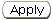

Previous Topic
Next Topic
| Common User Interface Elements |
Previous Topic |
Next Topic |
The IMPACT System makes frequent use of pop-up windows in many different situations and circumstances. For instance, you will see pop-up windows when you access on-line help, when you create a new permit application, emissions or compliance report, add an attachment to application or report.
Pop-up windows, an example of which is shown below, appear automatically when you click a button or link for an operation that uses them. They are similar in some ways to all the other screens in the system and different in other ways. They are re-sizable like other windows and have window titles that indicate the content of the window you are viewing. They are different in appearance in that they have no additional decoration beyond the window title. There are no 'Next' and 'Previous' links, nor access (from the pop-up) to browser functionality. Other important differences are that pop-ups appear on top of the window where you performed the operation that caused the pop-up to appear, rather than replacing the content of that window, which is how most other screens operate. You can still see the underlying window, but you can't click on anything in that window until you complete the operation in the pop-up.
This is the other fundamental different between pop-ups and normal screens -
you must explicitly exit a pop-up window by selecting a button such as
 or  .
The former, and buttons with other labels complete the
operation, for example, by creating a new permit application. The latter
closes the window without making any changes to the system. In some
cases, most notably on-line help topic pop-ups, you have to click the
at the upper right corner of the
pop-up window. All of these actions remove the pop-up window and
return you to the window from which you invoked the operation that brought
it up.
.
The former, and buttons with other labels complete the
operation, for example, by creating a new permit application. The latter
closes the window without making any changes to the system. In some
cases, most notably on-line help topic pop-ups, you have to click the
at the upper right corner of the
pop-up window. All of these actions remove the pop-up window and
return you to the window from which you invoked the operation that brought
it up.